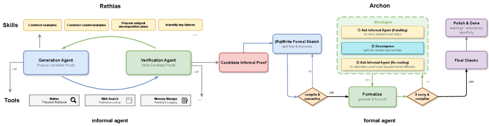

Archon agent formalizes research-level proofs into Lean 4 projects via LeanSearch.
Abstract
Recent advances in large language models have significantly improved their ability to perform mathematical reasoning, extending from elementary problem solving to increasingly capable performance on research-level problems. However, reliably solving and verifying such problems remains challenging due to the inherent ambiguity of natural language reasoning. In this paper, we propose an automated framework that integrates natural language reasoning with formal verification to tackle research-level mathematical problems. Our framework consists of two components: an informal reasoning agent, Rethlas, and a formal verification agent, Archon. Rethlas combines reasoning primitives with our theorem search engine, Matlas, to explore solution strategies and construct candidate proofs. Archon, equipped with LeanSearch, translates informal arguments into formalized Lean 4 projects through task decomposition, iterative refinement, and automated proof synthesis, ensuring machine-checkable correctness. Using this framework, we resolve an open problem in commutative algebra and formally verify the resulting proof in Lean 4 with essentially no human involvement. Additional case studies illustrate the capabilities of Rethlas in informal mathematical reasoning and discovery, as well as the ability of Archon to formalize research-level proofs in Lean 4. Our experiments demonstrate that strong theorem retrieval tools enable the discovery and application of cross-domain mathematical techniques, while the formal agent can autonomously fill nontrivial gaps in informal arguments. More broadly, our work illustrates a promising paradigm for mathematical research in which informal and formal reasoning systems, equipped with theorem retrieval tools, operate in tandem to produce verifiable results, reduce human effort, and support human-AI collaborative mathematical research.
Problem
Reliably solving and verifying research-level mathematical problems with LLMs remains challenging due to the ambiguity of natural language reasoning and the difficulty of ensuring correctness.
Approach
The authors propose a framework combining an informal reasoning agent (Rethlas) with a formal verification agent (Archon). Rethlas uses reasoning primitives and a theorem search engine (Matlas) to explore strategies and construct candidate proofs. Archon translates informal arguments into Lean 4 projects through task decomposition, iterative refinement, and automated proof synthesis with LeanSearch integration.

Figure 1 : Overview of the framework pipeline.
Results
The framework resolves an open problem in commutative algebra and formally verifies the proof in Lean 4 with essentially no human involvement. The formalization codebase spans 19,448 lines of Lean 4. Additional case studies demonstrate cross-domain mathematical technique discovery via theorem retrieval.